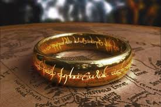
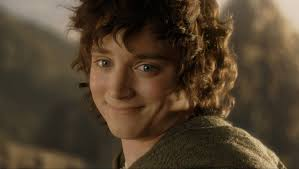
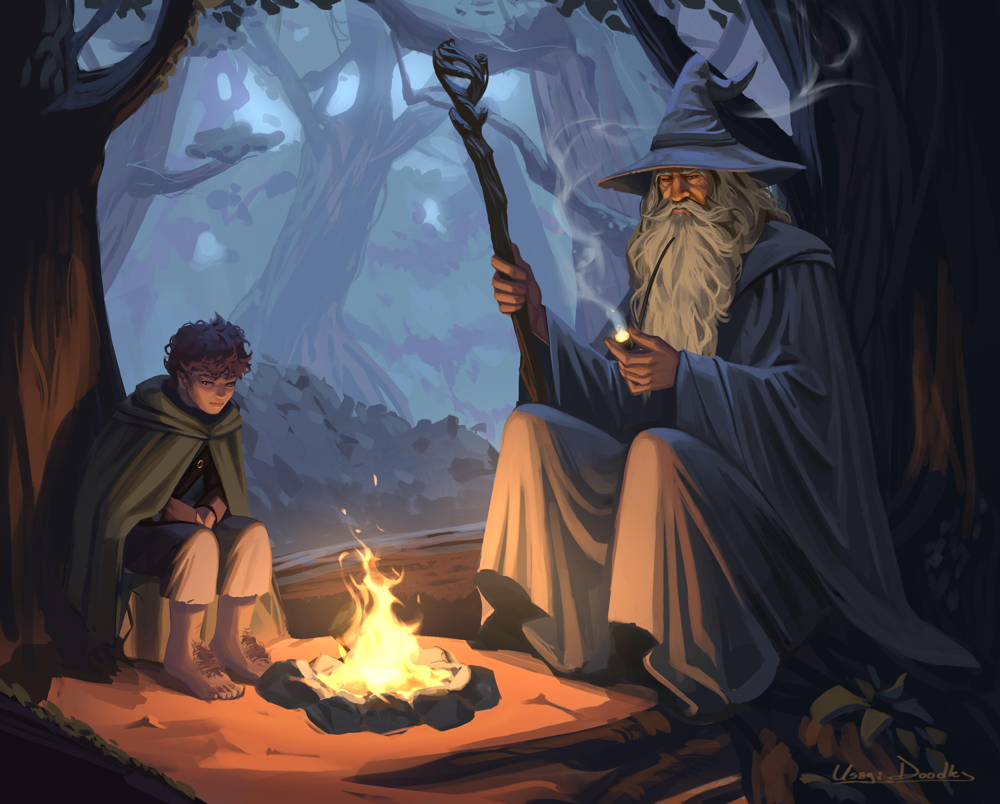

EEn la Tierra Media existen varios anillos de poder creados para influir y dominar. Entre ellos destaca el Anillo Único, forjado por Sauron en el Monte del Destino con el propósito de controlar a todos los demás. Este anillo posee una voluntad propia y otorga gran poder a su portador, pero también lo corrompe poco a poco. Su influencia es tan fuerte que incluso los más nobles pueden caer bajo su control.
A lo largo de la historia, diferentes personajes han sido portadores de los anillos de poder. Bilbo y Frodo Bolsón fueron quienes llevaron el Anillo Único, resistiendo su corrupción durante mucho tiempo. Otros, como los nueve hombres que recibieron anillos, fueron dominados por su poder y se convirtieron en los Nazgûl. Esto demuestra que el poder de los anillos depende tanto de su magia como de la voluntad de quien los porta.
Los magos en la Tierra Media son seres de gran sabiduría y poder que utilizan la magia para influir en los acontecimientos del mundo. Gandalf, por ejemplo, usa su magia para guiar, proteger y enfrentar a las fuerzas oscuras, mientras que Saruman representa cómo ese poder puede corromperse. La magia en este universo no siempre es visible, sino que muchas veces se manifiesta a través del conocimiento, la influencia y la conexión con fuerzas antiguas.


